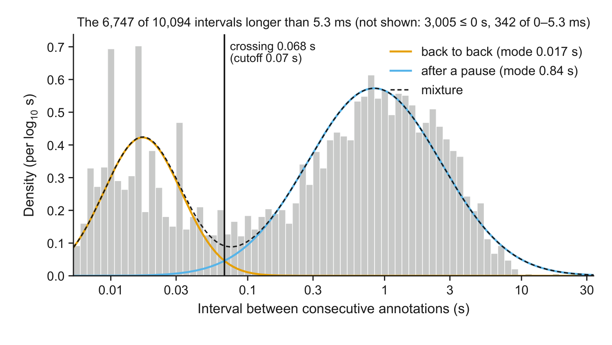
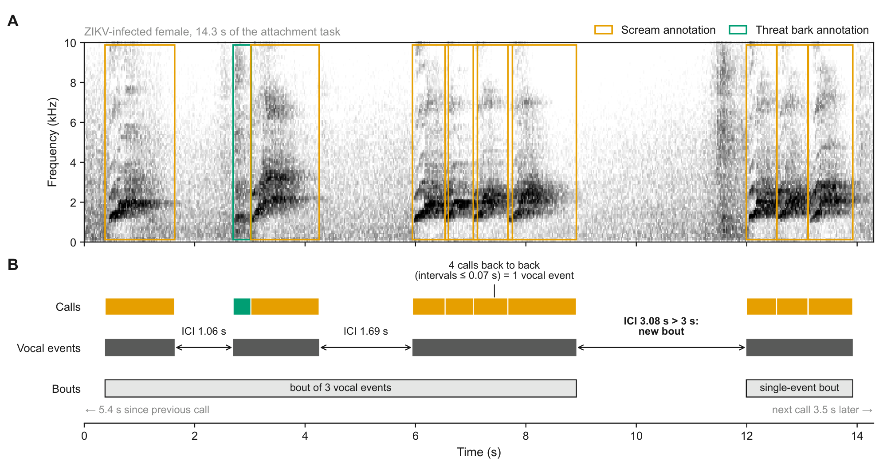
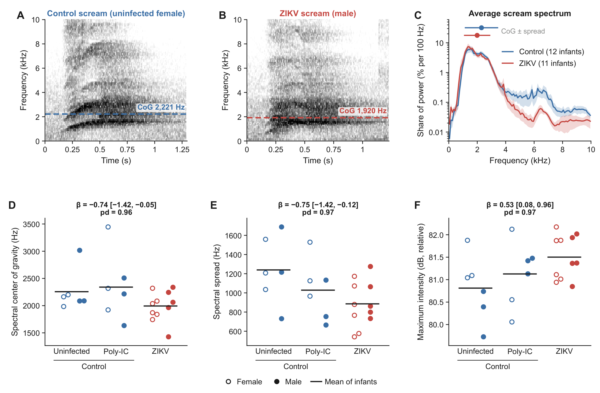

A cry is a measurement
Pediatricians have listened closely to newborn cries for decades because a cry offers a rare noninvasive window into the developing nervous system. Every cry is generated by an ancient brainstem network that coordinates breathing, the larynx, and the mouth under the influence of emotional centers higher in the brain. When early brain injury disrupts either emotional signaling or fine vocal control, the sound of the cry often shifts.
To test whether postnatal Zika virus infection leaves that kind of acoustic trace, I analyzed separation recordings from 24 infant rhesus macaques—12 infected with Zika virus at about five weeks old and 12 matched controls. At seven to eight months of age, each infant completed a ten-minute test in which it could see the caregiver who raised it without being able to reach them. Infants call heavily throughout that brief separation.
Earlier behavioral scoring on these same animals had uncovered an intriguing split: Zika-infected infants were just as attached to their caregivers as controls, yet their behavioral distress during separation was blunted. That quiet protest raised a straightforward question: did their calls also sound different?
Two ways a call can change
Early brain injury can alter an infant's calls through two distinct biological pathways, and each leaves a different acoustic footprint:
- Shifted emotional arousal. Across mammals, highly distressed callers produce louder, longer, higher-pitched calls with more energy pushed into higher frequencies. A less distressed infant should therefore call lower in frequency, more quietly, and less persistently.
- Disrupted vocal machinery. If infection impairs fine motor control over the larynx, the vocal folds vibrate less steadily. That instability shows up as vocal roughness—tiny cycle-to-cycle wobbles in pitch (jitter) and loudness (shimmer), along with weaker harmonic structure.
I designed the acoustic feature set and statistical models so the data could support either mechanism, or neither.
Measuring 5,328 calls
Every measurement began with blinded human annotation so expectations about Zika infection could not color the labels. Two trained observers unaware of group assignment drew boxes on spectrograms marking the start, end, and type of every call, and two experienced observers—also blind to infection status—verified every box, producing 10,118 labeled calls. I focused the acoustic analysis on the two most common call types: coos (tonal contact calls) and screams (loud, broadband distress calls), which together totaled 5,328 calls.
From each coo and scream, I extracted 15 acoustic measurements in Praat through its Python interface Parselmouth. Those measurements capture six dimensions of sound: call duration, pitch (fundamental frequency), vocal-fold roughness (jitter and shimmer), periodicity (how cleanly the waveform repeats), loudness, and spectral shape—where a call's energy concentrates across frequencies (its center of gravity) and how widely that energy spreads.
Deciding what counts as a pause
Measuring the rhythm of calling required solving a measurement problem before running a single model. Infants frequently string calls together with no breath or silence in between, so observers drew consecutive boxes that touched or slightly overlapped. Fully 30% of the gaps between adjacent boxes were zero or slightly negative, a pileup that would distort any naive average of pause length.
Instead of picking a cutoff by eye, I let the timing data set the first boundary. Plotted on a logarithmic scale, positive gaps between consecutive calls split cleanly into two distinct humps: a smaller peak near 0.017 seconds (about two hundredths of a second) and a larger peak near 0.84 seconds. Fitting a mixture of two bell curves to that bimodal distribution pinpointed their crossing point at 0.068 seconds, giving a data-driven 0.07-second threshold.

That 0.07-second boundary divided each recording into three clean timing units. Calls spaced 0.07 seconds apart or less count as back to back, and an uninterrupted run of them forms one vocal event (4,710 in all). A pause is the silence between one vocal event and the next, and a bout groups consecutive vocal events separated by pauses of 3 seconds or less (626 in all). Because the recordings showed no natural break at 3 seconds, I treated that bout cutoff as a working convention and later varied it during sensitivity checks.

© Emory National Biomedical Research Center, Emory University. All rights reserved.
To analyze repeated calls without inflating statistical certainty, I fit a separate Bayesian hierarchical model in PyMC (through Bambi) for each measure—15 features in coos, 15 in screams, and 6 timing metrics, making 36 models in total. Every model includes an infant-level random effect so an animal that calls 280 times counts as one infant rather than 280 independent observations. Following Richard McElreath's Statistical Rethinking, I report 89% credible intervals instead of the conventional 95% as a deliberate reminder that any cutoff is arbitrary.
What changed
Across those 36 models, Zika-infected infants matched controls on pitch and vocal-fold steadiness, yet two concrete differences stood out: Zika-infected infants shifted the frequency shape of their screams, and Zika-infected males broke up their calling rhythm.
In screams, Zika-infected infants concentrated acoustic energy at lower frequencies and within a narrower band than controls. Their spectral center of gravity sat roughly 300 Hz lower, and their spectral spread narrowed by about 240 Hz. In the group-average spectrum, Zika-infected infants and controls track each other closely up to roughly 4 kHz; above 4 kHz, screams from Zika-infected infants carry a smaller share of their energy.

© Emory National Biomedical Research Center, Emory University. All rights reserved.
Just as informative was everything that stayed flat. Zika-infected infants matched controls on scream pitch, vocal-fold roughness (jitter and shimmer), and periodicity. Across coos, 14 of 15 acoustic features showed no credible group difference, leaving only longer coo duration in Zika-infected infants—a candidate difference that would soon face stress testing.

Calling rhythm shifted even more sharply, and that gap belonged entirely to males. Overall, Zika-infected infants gave 38% of their calls back to back, compared with 53% in controls—roughly half the odds. Splitting the cohort by sex showed where that drop lived: Zika-infected males initiated about as many vocal events as control males, yet they rarely chained calls together, with every Zika-infected male calling back to back less often than every control male (11–36% of consecutive calls vs. 38–81%). In females, the two groups overlapped almost completely.

Then I tried to break it
Fitting 36 models creates 36 chances to get fooled by noise. At an 89% credibility threshold, roughly four models should clear the bar by chance even if Zika virus did nothing at all, and six models cleared it here. Because the raw count settles very little, I ran five systematic stress tests to see which effects survived when I tried to knock them down:
- Adjust for sex: Re-estimated every effect separately in males and females.
- Split the controls: Separated untreated controls from immune-stimulant (Poly-IC) controls. Half the controls had received Poly-IC to trigger an antiviral immune reaction without introducing any virus, so any shift shared by Poly-IC controls points to immune activation instead of Zika virus.
- Split by recording cohort: Divided Zika-infected infants across the two recording waves, collected 15 months apart, to test whether each effect appeared in both.
- Leave one infant out: Refit every model dropping one animal at a time to ensure no single infant carried a group difference.
- Shift timing definitions: Moved the back-to-back cutoff to 0 and 0.15 seconds, moved the bout cutoff to 1.5 and 5 seconds, and measured gaps between individual calls instead of between vocal events.
Four of the six initial effects failed those checks. First, longer coos in Zika-infected infants appeared only in males—and immune-stimulant (Poly-IC) controls produced coos just as long, pointing to general immune activation instead of Zika virus. Longer screams showed the same pattern more weakly.

Two other initial differences also broke down on closer inspection. Zika-infected infants paused roughly one and a half times longer between vocal events than controls overall, yet splitting the controls showed they paused longer than Poly-IC controls while matching untreated controls—and the estimate shrank once I shortened the bout cutoff. Peak scream loudness ran about half a decibel higher in Zika-infected infants, a margin on uncalibrated microphones that a freely moving infant can produce simply by shifting 6% closer to the mic, so I read nothing into it.
One additional timing pattern looked striking in raw summaries yet proved too fragile for statistical claims. Zika-infected infants broke their calling into more bouts than controls (a median of 22 bouts per infant vs. 13), and nearly half of their bouts were single vocal events surrounded by silence (48% vs. 18%). Because hierarchical bout-size models produced wide intervals that failed leave-one-out checks, I report that pattern strictly as a description.
Two results survived all five rounds of testing, with clear differences in how tightly each held. In screams, narrower spectral spread stayed credible across all 23 leave-one-out refits (among the 23 infants that produced screams); its companion, lower spectral center of gravity, kept the same direction in every refit yet remained credible in only 14 of 23, so I hold it more loosely. In timing, the drop in back-to-back calling stayed credible in all 24 leave-one-out refits, held at roughly the same size across both recording cohorts and against both control subgroups, and came entirely from males.
Surviving five checks still does not turn small-sample inference into certainty. Once 23 or 24 infants are split by cohort, sex, or control subgroup, each cell drops to five or six animals; the scream spectral estimates kept their direction across those splits yet frequently lost precision, reflecting the real statistical ceiling of the cohort.
A result you have not tried to break is one you have not really looked at.
What it means, as far as I can tell
Taken together, the surviving shifts fit altered emotional arousal better than damaged vocal machinery, though neither explanation fits completely. Lower, narrower screams and shorter calling runs in males match what reduced arousal should sound like and line up with the blunted separation distress we saw behaviorally. Even so, scream pitch—usually the clearest acoustic marker of arousal in macaques—did not move, and steady vocal-fold vibration argues against simple motor damage, though a smaller mouth opening or weaker coordination between breathing and voice could still contribute.
What the data honestly establish is narrower: early Zika infection coincided with shifts in scream spectral shape and male calling rhythm, while the underlying mechanism remains open. Real limits bound that conclusion—small subgroups, a single ten-minute recording per infant, audio captured by camera microphones, and infection group partially tangled with recording date. Checking both recording cohorts helps probe that date confound without removing it completely.
Teaching a machine to listen
Hand-marking 10,118 calls took four annotators, a manual bottleneck that makes larger follow-up studies impractical. To automate call detection for future cohorts, I built an end-to-end audio detector in PyTorch:
- Acoustic input: I convert 24 kHz audio into 128-band log-mel spectrograms (time-frequency images scaled to reflect mammalian hearing) in 10 ms frames. Measuring each frequency band relative to that recording's own noise floor strips out differences in gain and microphone response across cameras.
- Model architecture: A convolutional neural network extracts local spectrogram features, feeding a two-layer bidirectional GRU that reads temporal context forward and backward. The network classifies every frame (background, scream, coo, threat bark, or affiliative call) and separately predicts call start and end boundaries so back-to-back calls split cleanly instead of merging.
- Training strategy: I augment training clips by making recordings artificially quieter and noisier, and I oversample rare call types so frequent screams do not overwhelm them.
- Validation: I evaluate generalization with four-fold animal-level cross-validation, training each fold on 18 infants and scoring it on 6 animals the model has never heard, balanced across recording sessions. I report precision and recall per call type and per recording, paired with a confusion matrix that separates wrong call labels from missed calls and false alarms.
- Lab workflow: Averaging predictions across all four fold models exports a table that opens directly in Raven—the software our lab already uses—alongside human annotations, letting reviewers audit low-confidence detections first.
The hardest engineering challenge has been hardware domain shift. Newer cohorts were recorded on different cameras whose microphones color sound differently. To test cross-hardware generalization honestly, I hold out entire recording dates during evaluation and compare training augmentations—such as simulating a muffled microphone—before posting final benchmark scores here once the evaluation write-up is finished.
Status. Presented as a poster at SimCo 2026. A manuscript is in preparation; the figures and numbers on this page follow its current draft and may change before submission.
With Kaitlyn Love, Alex van Schoor, Noah Larco, Cynthia Guo, Rebecca Richardson, Mehul Suthar, Ann Chahroudi, and Jessica Raper (principal investigator), at the Emory National Biomedical Research Center. Funded by the National Institute of Neurological Disorders and Stroke (R01 NS120182) and the NIH Office of the Director (P51 OD011132).
The brain and behavior findings in the same animals: Zika and the developing brain, and Desai et al. (2026), preprint on bioRxiv.